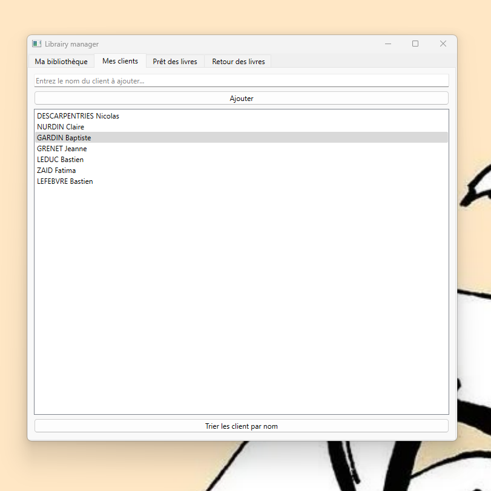

LIBRARY MANAGER
Ce programme en Python est un système de gestion de bibliothèque utilisant Pyside pour l'interface graphique et SQLite comme base de données.
Le système vous permet de gérer des livres et des emprunteurs. Il est ainsi possible d'ajouter, de suppirmer, de modifier et d'afficher les emprunteurs et les livres. Il permet également de gérer l'emprunt des livres par les utilisateurs, ainsi que leur retour.
Accès au repo Github